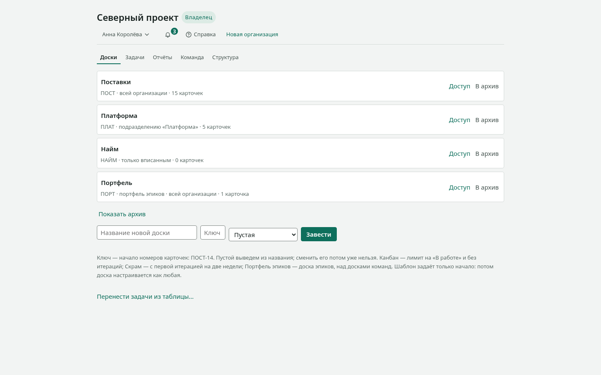
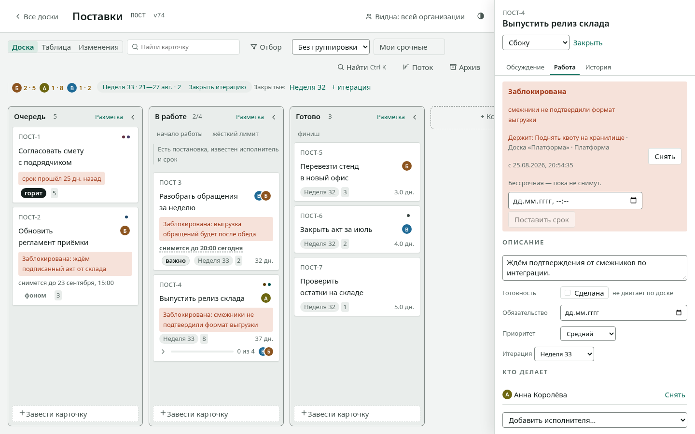

Первые пятнадцать минут
Пройдите этот путь один раз — и дальше доска не будет требовать объяснений. Мы заведём доску, поставим на неё работу, проведём её до конца и позовём коллегу.
Вам понадобится открытая доска в браузере и пятнадцать минут.

1. Заведите доску
- На главном экране введите название в поле «Название новой доски».
- Рядом, в поле «Ключ», введите короткое слово — например,
ПОСТ. Оно станет началом номеров карточек: ПОСТ-1, ПОСТ-2. Оставите пустым — выведем из названия. - Нажмите «Завести».
Доска откроется сразу. В ней уже есть три колонки: «Очередь», «В работе», «Готово». Это стадии работы, и их можно менять.
2. Поставьте работу
- Внизу колонки «Очередь» нажмите «Завести карточку».
- Напишите, что нужно сделать, и нажмите
Enter.
Заведите три-четыре карточки: на одной доска ничего не показывает.
3. Перенесите карточку
Возьмите карточку мышью и перетащите в «В работе». Или, что быстрее: встаньте на неё с клавиатуры и нажмите Ctrl со стрелкой вправо.
Карточка вспыхнет на новом месте — так доска показывает, куда она уехала. Изменение сразу увидят все, у кого открыта эта доска.
4. Опишите работу подробнее
- Щёлкните по названию карточки — откроется панель.
- Перейдите на вкладку «Работа».
- Назначьте исполнителя, поставьте оценку и срок.

Если работа встала — нажмите «Заблокировать» и напишите причину. Причина будет видна прямо на доске: «заблокирована» без объяснения не отвечает ни на один вопрос.
5. Доведите до конца
Перенесите карточку в «Готово». Через несколько таких карточек откройте «Поток» в шапке доски: там появятся время цикла, пропускная способность и прогноз. Метрики считаются из того, что вы уже сделали, — придумывать ничего не нужно.
6. Позовите коллегу
- Откройте вкладку «Команда».
- В разделе «Пригласить» введите почту и выберите роль.
- Нажмите «Пригласить» и отправьте появившуюся ссылку.
Ссылка адресная: человек с другим адресом её не примет. Показывается она один раз — в базе хранится только отпечаток.
Что дальше
- Решить конкретную задачу — «Как сделать».
- Посмотреть все возможности списком — «Справочник».
- Понять, почему доска устроена именно так, — «Устройство».